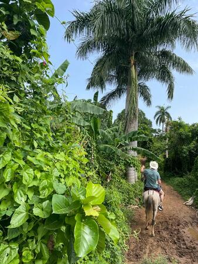
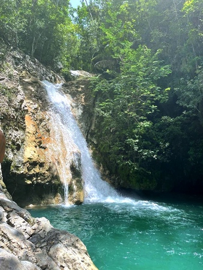

SPOLU NA CESTÁCH
08.07.2022
|  |  |
Neopísateľná cesta na koni, ktorá určite uchváti aj teba (:
Ďalšou zastávkou po Havane bolo mesto Trinidad, ktoré je vzdialené 315 km, čo sú približne 4hod autom. Presun sme riešili až v Havane, pretože sme mali wifi a objednali si taxi priamo z bytu. Čo sa týka vlakov a autobusov - autobus ide raz za deň a je lepšie si rezervovať miesto pár dní pred cestou, cesta vlakom je komplikovanejšia .. tak sme sa rozhodli presúvať radšej prostredníctvom taxi (cenovo to bolo dosť podobné ako autobus..). Neskôr sa nám však osvedčilo, skúšať miestnych taxikárov a dalo sa zjednať cenu (: